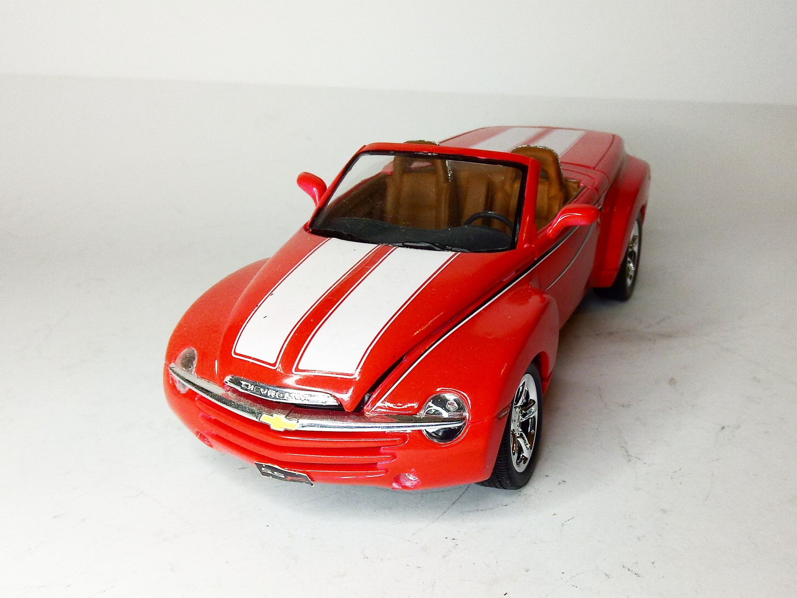
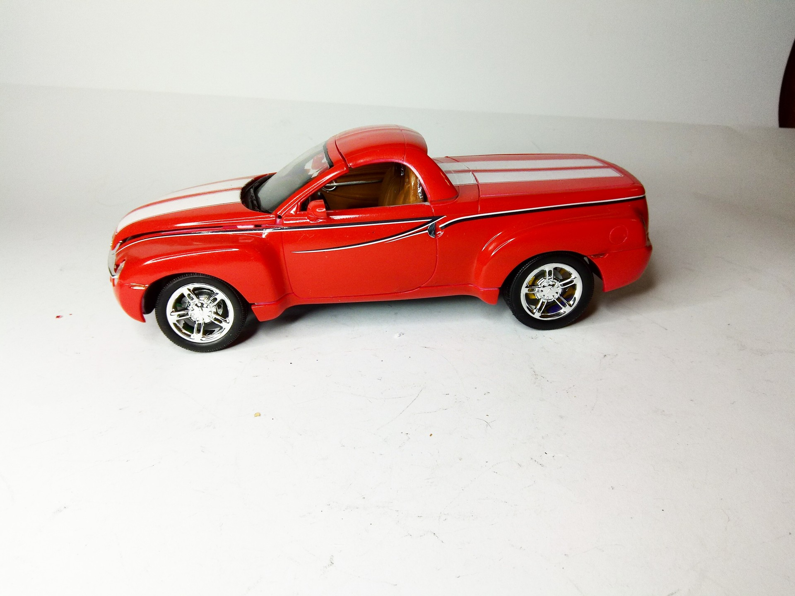
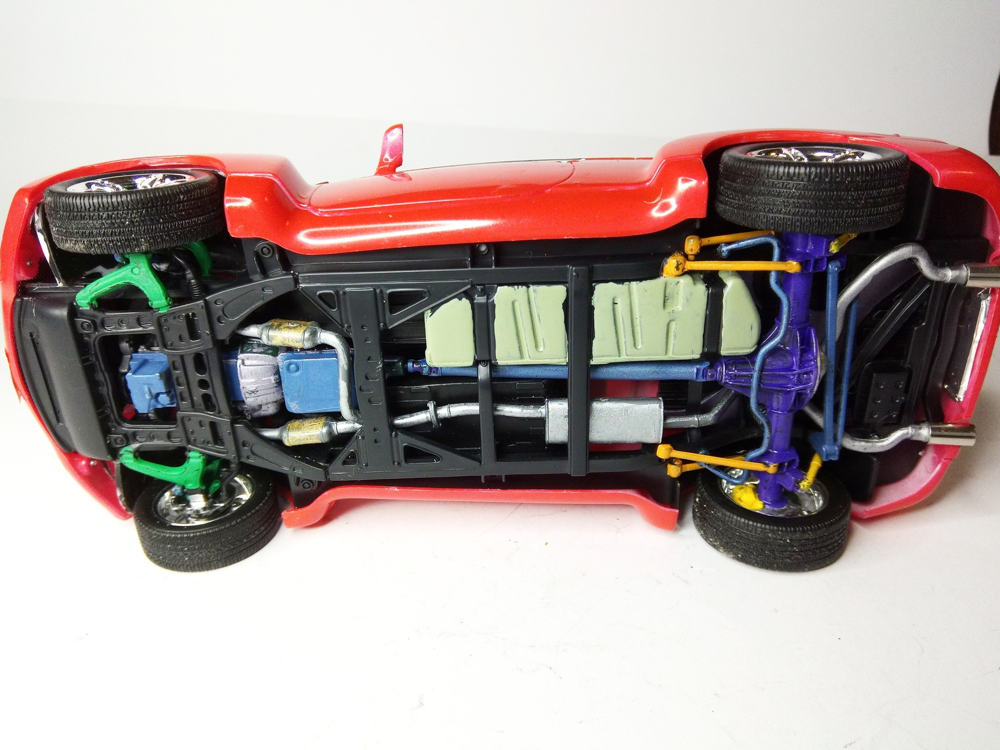
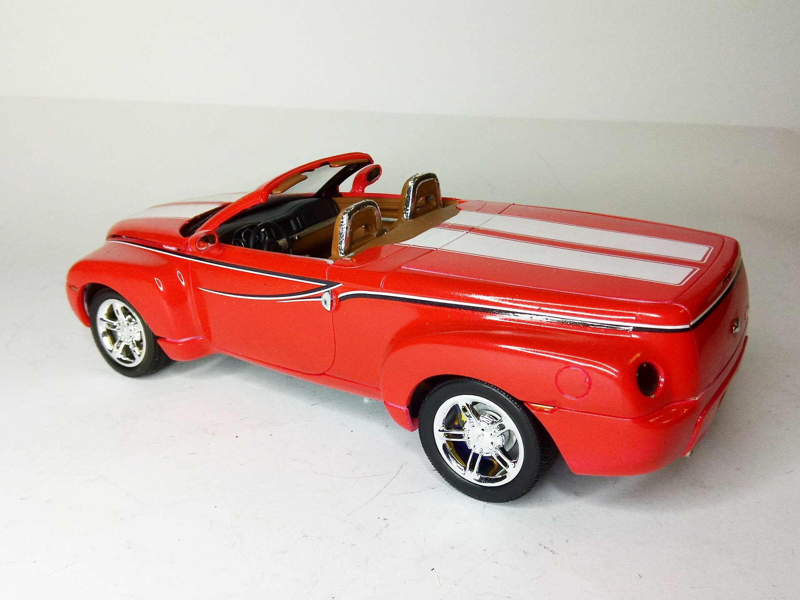

Auto e veicoli stradali · scale model archive
Chevrolet SSR (Super Sport Roadster)
Chevrolet SSR (Super Sport Roadster) — Kit: Revell, Scale: 1/25 #Chevrolet #SSR. 2003 retro-style pickup, rather original…

Photo gallery



English description
2003 retro-style pickup, rather original
https://www.youtube.com/watch?v=0-eWzZuXUQg&t=948s&ab_channel=DougDeMuro
https://www.youtube.com/watch?v=JSQABPZ8y_8&ab_channel=Saabkyle04
https://www.youtube.com/watch?v=kKM8I6G_dQw&ab_channel=TFLclassics
#1/25 #Revell
Descrizione italiana
2003 stile rétro pickup, piuttosto originale.
Maggiori informazioni: https://www.youtube.com/watch?v=0-eWzZuXUQg&t=948s&ab_channel=DougDeMuro
Maggiori informazioni: https://www.youtube.com/watch?v=JSQABPZ8y_8&ab_channel=Saabkyle04
Maggiori informazioni: https://www.youtube.com/watch?v=kKM8I6G_dQw&ab_channel=TFLclassics